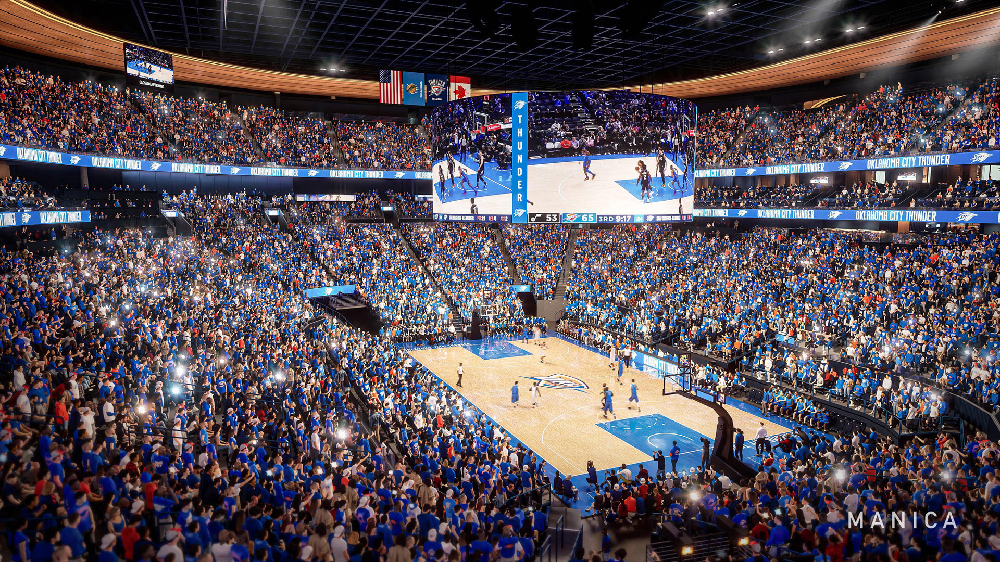

The Oklahoma City Thunder are a professional basketball team competing in the National Basketball Association (NBA) as a member of the Western Conference. Based in Oklahoma City, the Thunder play their home games at the Paycom Center and are known for their passionate fan base and strong community support. Since relocating to Oklahoma City in 2008, the franchise has become a central part of the city sports identity. The team’s presence has helped elevate Oklahoma City’s national profile and has contributed to the growth of professional sports culture in the region. Over the years, the Thunder have established traditions and rivalries that continue to shape their identity within the league.
The Thunder organization places a strong emphasis on developing young talent and building a competitive team through long-term planning. Rather than relying heavily on short-term free-agent signings, the franchise has focused on drafting, player development, and strategic trades. This approach has helped the team remain competitive while preparing for sustained success in future seasons. The front office prioritizes patience, consistency, and internal growth to ensure players reach their full potential.
Beyond performance on the court, the Oklahoma City Thunder are actively involved in community outreach and charitable initiatives. The organization supports youth programs, education initiatives, and local partnerships throughout Oklahoma. These efforts reflect the teams commitment to making a positive impact both within the NBA and in the surrounding community. By engaging with fans and local organizations, the Thunder strengthen their connection to the city they represent. Community involvement has become a core value of the franchise’s overall mission.

Image sources: NBA, OKC Thunder